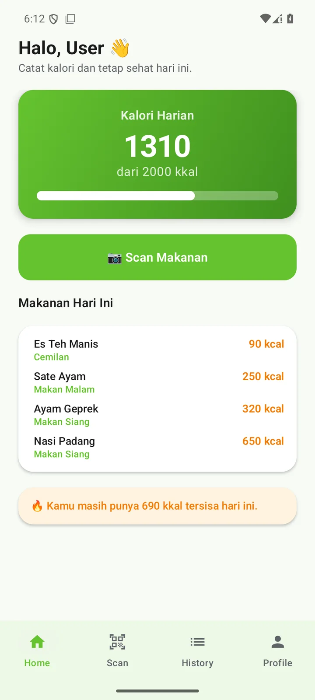
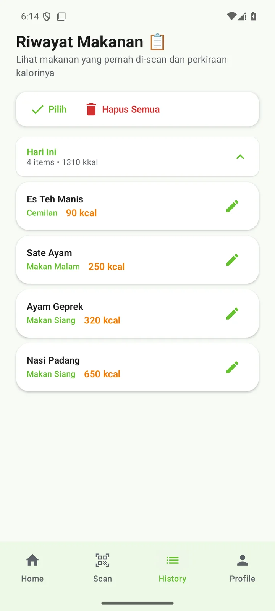
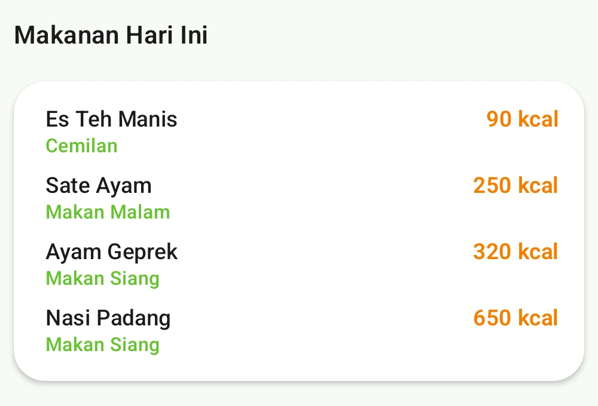

Multi-dish AI scan
Rice, a side, and a drink in one shot? AI separates each item and estimates its calories on its own.
Calorie tracker with AI
KaloriKu recognises any dish from a single photo — calories and nutrition logged instantly. No account, no fuss.

How it works
No food database to dig through. Just show your plate.
Point the camera at your table — one dish or a whole spread. Or simply type “fried rice and sweet iced tea”.
The photo is split per dish, then AI estimates calories and nutrition. You can edit anything before saving.
See what is left for today, your history by meal, and progress against a target built from your body and activity.
Features
Logging works offline-first on your phone, with AI only where AI actually helps.
Rice, a side, and a drink in one shot? AI separates each item and estimates its calories on its own.
No time for a photo? Write “two chicken skewers and sweet iced tea” and let AI turn it into calories.
Already know the number? Type the name and calories straight in, without spending a scan.
Calculated from weight, height, age, and activity level (BMR × TDEE) — or set it yourself to the calorie.
Every entry is stored by day and by meal: breakfast, lunch, dinner, snack.
Every time you log something you can see how much of the day's budget is left — and when you went over.
Screens
The two screens you open most: today's summary, and history grouped by day.

Any food, one photo
Not limited to one cuisine. Photograph the plate — Indonesian, Asian, Western, whatever is on the table — and the AI names each dish and estimates its calories, including the ones hiding in oil and sauce.
Real numbers from the app. Every AI result can still be edited before you save it.

Straight from the app: four meals, 1,310 kcal, all editable.
Pricing
Subscriptions are handled by Google Play. Pricing follows the Play Store listing.
$0
To try it and log your days.
Subscription
For people who log every day.
No account, ad-free on Premium, and no selling your data to third parties.
FAQ
Accurate enough for daily tracking, not a replacement for a kitchen scale or a dietitian. Every result can be edited — name, calories, and meal — before it is saved.
No. You are signed in automatically and securely, so you can start logging within seconds.
Free accounts get 3 AI scans per day. Premium raises that to 10 per day and unlocks AI text analysis. Manual logging never uses your quota.
Premium increases the daily scan quota to 10, unlocks AI text analysis, and removes ads. Every other logging feature is already in the free version.
Yes. The AI recognises common dishes across cuisines — Indonesian, Asian, Western — and you can always edit the result before saving.
Delete individual meals or the whole history from the History screen. For anything else, email us at zaforaapps@gmail.com.